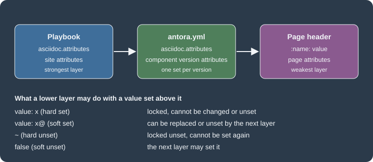

AsciiDoc Attributes and Extensions
|
This content was generated with the assistance of AI and should be verified against the official documentation before being relied on in production. |
Antora converts every page with Asciidoctor.js, and two settings tune that conversion: the attributes that are defined
for a page and the Asciidoctor extensions that are loaded. This page was written against Antora 3.2.1 and checked on
2026-10-26. The examples were built with Antora 3.2.1 in a scratch site based on the Pocket Units running example; the
Irurueta Docs playbook itself pins Antora 3.1.15 in its package.json, and everything described here also applies to the
3.1 line unless a version is named.
Why attributes and extensions matter
An AsciiDoc attribute is a named value. Some attributes are built into AsciiDoc and switch behaviour on and off
(experimental, stem, sectanchors), some are defined by Antora (page-component-name, imagesdir), and the rest are
custom values an author invents, such as a product name that appears on fifty pages. Defining a custom value once and
referencing it everywhere is the main reason to use them.
A documentation site has three natural places to define an attribute, and Antora supports all three:
-
the playbook, which defines site attributes for every page of every component in one run;
-
the component version descriptor
antora.yml, which defines attributes for the pages of one component version; -
the page header, which defines attributes for that page only.
An Asciidoctor extension is JavaScript that adds a new block, a new macro or a new converter behaviour to AsciiDoc itself, for example rendering a LaTeX formula or turning a diagram description into an image. It is a different thing from an Antora extension, which hooks into the site generator (see Antora Extensions).
The three attribute scopes
Site attributes in the playbook
Site attributes live under asciidoc.attributes in the playbook (see the playbook page).
Each key is an attribute name and each value a YAML scalar.
asciidoc:
attributes:
experimental: ''
mathjax-tex-tags: ams
page-team: Docs Team@The playbook of this site defines three attributes: experimental (which enables the keyboard, button and menu macros) and
the MathJax settings mathjax-tex-tags and mathjax-tex-packages, described below.
Component attributes in antora.yml
The same asciidoc.attributes key can be added to the component version descriptor. It applies to every page of that
component version, so a documentation branch for version 1.0 can carry different values from the branch for 2.0.
name: pocket-units
title: Pocket Units
version: '2.0'
nav:
- modules/ROOT/nav.adoc
asciidoc:
attributes:
product-name: Pocket Units
page-owner: docs-teamThe official page notes that a value starting with a brace has to be quoted in YAML, and that a backslash in front of an
attribute reference stops Asciidoctor from substituting it. Attribute values are strings: the official pages advise
against the YAML boolean true, since it is most likely coerced to the string true. According to the Antora 3.2 release
notes, 3.2 changed how values are parsed (a YAML tag is needed for a value to be parsed as YAML, and quotes are no longer
stripped), so check the values of an upgraded site that relied on the old behaviour.
Page attributes in the header
Anything written in the page header, between the title and the first blank line, is a page-level definition.
= Converting Lengths
:product-name: Pocket Units for Teams
:page-reviewed: 2026-10-26
Welcome to {product-name}.Source: Antora docs: Page attributes
Hard and soft values, and precedence
Playbook values are the strongest, component values are next and the page header is the weakest. A layer can only change a value defined above it when that value is soft. The notation is part of the YAML value:
| Write in YAML | Meaning | Effect on layers below |
|---|---|---|
|
Hard set |
The value is locked. A component or page that defines the attribute again is ignored. |
|
Soft set |
The value is a default. A component or page can replace it or unset it. |
|
Soft set with an empty value |
A bare |
|
Hard unset (YAML null) |
The attribute stays undefined and cannot be set by a lower layer. |
|
Soft unset |
The attribute starts undefined but a lower layer can set it. |

The figure summarises the order: the playbook is applied first, then the component descriptor, then the page header, and each arrow only passes a change through when the value above is soft.
A scratch experiment
To see the rules rather than just read them, a scratch site was built with a playbook, a component descriptor and a page that all define the same names. The playbook contained:
asciidoc:
attributes:
site-hard: from-playbook
site-soft: from-playbook@
comp-soft: from-playbook@
experimental: ''
hard-unset: ~
soft-unset: falseThe component descriptor set site-hard: from-component, site-soft: from-component, comp-soft: from-component@ and
comp-hard: from-component. The page header set every one of those names to from-page, plus hard-unset and
soft-unset. The values rendered in the page body were:
| Attribute | Rendered value | Why |
|---|---|---|
|
from-playbook |
Hard set in the playbook, so neither the component nor the page changed it. |
|
from-component |
Soft in the playbook, so the component replaced it. The component value is hard, so the page could not. |
|
from-page |
Soft in the playbook and soft in the component, so the page won. |
|
from-component |
Hard in the component, so the page was ignored. |
|
undefined |
Hard unset in the playbook. The reference stayed as literal text and Asciidoctor reported a missing attribute warning. |
|
from-page |
Soft unset in the playbook, so the page was allowed to set it. |
An undefined reference produces the warning skipping reference to missing attribute and the text of the reference is
left in the page. When a reference is optional, guard it with an ifdef conditional on the attribute name.
Choosing where to define a value
-
Put values that must be identical across the whole site in the playbook as hard values. This site does so for the MathJax settings.
-
Put defaults that individual components or pages may legitimately change in the playbook or
antora.ymlwith a trailing@. A good example from the official page ispage-toclevels, which is set softly so a page can override the table of contents depth. -
Put content values such as product names in
antora.yml, so each documentation branch carries the value that matches its version. -
Keep values that belong to one page in that page’s header.
Built-in attributes that Antora sets
Antora sets several AsciiDoc attributes for you, and the playbook page says that some of them, such as imagesdir,
cannot be overridden (in the scratch site imagesdir was _images). Other built-in attributes do not apply in Antora,
for example data-uri, docinfo and outfilesuffix.
The attributes below are read-only and describe the page being converted. Their values come from the scratch site built
from a local Git repository on the branch main:
| Attribute | Value in the scratch site | Meaning |
|---|---|---|
|
index |
The page file name without extension. |
|
pocket-units |
The component name from |
|
2.0 |
The component version. |
|
Pocket Units |
The component title. |
|
ROOT |
The module the page belongs to. |
|
index.adoc |
The path of the page relative to the |
|
git |
Whether the content came from a Git repository or a plain directory. |
|
the repository URL |
Where the content was read from. |
|
main |
The branch or tag name. |
|
branch |
Whether the reference is a branch or a tag. |
A reference to page-origin-startpath stayed unresolved in this test because the scratch repository had no start_path.
The official intrinsic attributes page was not available when this page was checked, so treat the table as a sample of
what was observed rather than the complete list.
The page- prefix has one extra meaning. The official page attributes page explains that an attribute whose name starts
with page- is promoted into the UI model, so a template can read it as page.attributes.<name> with the prefix removed.
An attribute without the prefix is not exposed this way. It also lists three reserved names: page-aliases (alternate
resource IDs that keep old links working), page-layout (which UI template renders the page) and page-partial.
page-pagination and page-toclevels are used by the default UI. The playbook, the component descriptor or the
page header can all set a page- attribute.
Asciidoctor extensions with asciidoc.extensions
Extensions are registered under asciidoc.extensions in the playbook. The key takes a list of npm module names or file
paths, and it must not be confused with antora.extensions, which registers site generator extensions. The official page
describes the forms of an entry:
-
a module name such as
'@djencks/asciidoctor-mathjax', resolved from thenode_modulesof the playbook project or the globalnode_modules; -
a relative or absolute file path such as
./lib/unit-macro, resolved relative to the playbook; -
a module whose name ends in a file extension needs a trailing slash (for example
highlight.js/), otherwise Antora treats it as a local file and the error is typicallyCannot find module; -
the CLI option
-ror--requirepreloads a script or module, in which case the script must register itself because Antora only requires it.
An extension is either global or scoped. A global extension exports a function that Antora hands to Asciidoctor’s static
registry, so it is shared by all documents including navigation files. A scoped extension exports
register(registry, context) and registers itself on a registry created for each page, which receives the content catalog,
the file and the AsciiDoc configuration. The official page states that scoped extensions apply to pages and not to
navigation files, and it describes asciidoctor-kroki as a scoped example.
A custom scoped extension
The following extension adds an inline macro and was run in the scratch site, where it was listed after the other extensions.
'use strict'
module.exports.register = function (registry, context) {
registry.inlineMacro('unit', function () {
const self = this
self.process((parent, target) => {
const text = `<span class="unit">${target}</span>`
return self.createInline(parent, 'quoted', text, { type: 'unquoted' })
})
})
}asciidoc:
extensions:
- ./lib/unit-macroA page containing the text unit:km[] came out as <span class="unit">km</span>, so the extension ran.
MathJax, as used by this site
This site renders mathematics on the server, with @djencks/asciidoctor-mathjax 0.0.9. The extension replaces
Asciidoctor’s own stem processing and writes the equation as inline SVG in the page, so the UI needs no MathJax script.
The asciidoc part of the playbook is:
asciidoc:
attributes:
mathjax-tex-tags: ams
mathjax-tex-packages: ams boldsymbol
experimental: ''
extensions:
- '@djencks/asciidoctor-mathjax'Source: asciidoctor-mathjax project
The extension is configured through attributes, which is why the two features belong on one page. According to its README:
-
stemselects the default processor,latexmathorasciimath; -
mathjax-tex-packageslists the TeX packages to load, for exampleams physics; -
mathjax-tex-tagssets equation numbering and acceptsnone(the default),ams(needs theamspackage) orall. Equations are numbered per page in Antora.
In the scratch site, a [stem] block and an inline latexmath macro were both rendered into <svg> elements inside the
HTML, with no MathJax script on the page. Bare TeX delimiters (\( ... \) and \[ ... \]) written directly in the
text were not converted and stayed literal, so write formulas with or a [stem] block. Line breaks with a double backslash are not supported by MathJax 3, and the
README suggests \displaylines or an ams environment such as aligned instead.
Kroki
asciidoctor-kroki turns diagram source such as PlantUML or GraphViz into an image through a Kroki server. It is not used
by this site, which relies on Mermaid. It was installed at version 0.18.1 in the scratch site and listed in
asciidoc.extensions:
asciidoc:
extensions:
- asciidoctor-krokiA [plantuml] literal block was converted into an <img> element whose address pointed at the public Kroki server and
contained the encoded diagram. In that default configuration the diagram text is therefore sent to the server whenever a
reader loads the page. For private diagrams, consult the extension’s README about which server it contacts and whether the image can be
produced at build time; those options were not tried here.
Mermaid is an Antora extension
Mermaid diagrams on this site do not use asciidoc.extensions. @sntke/antora-mermaid-extension is listed under
antora.extensions: it finds [mermaid] blocks, leaves their text in the page and adds a script to the UI’s
header-scripts partial that loads Mermaid in the reader’s browser. In the scratch site the generated script was
import mermaid from 'https://cdn.jsdelivr.net/npm/mermaid@11/dist/mermaid.esm.min.mjs'; mermaid.initialize({"startOnLoad":true});
and the block became a <div class="mermaid content"> containing the diagram source.
antora:
extensions:
- require: '@sntke/antora-mermaid-extension'
mermaid_library_url: https://cdn.jsdelivr.net/npm/mermaid@11/dist/mermaid.esm.min.mjs
script_stem: header-scripts
mermaid_initialize_options:
start_on_load: trueSource: Antora Mermaid extension README
The extension depends on the UI having a header-scripts partial. Its README lists further options such as
elk_library_url and mermaid_run_options; option keys are written in snake case in the playbook.
Pitfalls
-
Defining
antora.ymlattributes without@locks them against pages. The scratch run showedsite-softstuck at the component value because the component did not append@. -
Hard unset (
~) leaves references as literal text and logs a warning, which can break a build run with a strict--log-failure-level. -
An Asciidoctor extension belongs under
asciidoc.extensionsand a site generator extension underantora.extensions; the Mermaid extension used here is the second kind. -
A module name ending in a file extension needs a trailing slash.
-
The
page-prefix is what makes an attribute reachable from UI templates. Without it the value is only available in AsciiDoc content. -
Server-side MathJax makes pages larger because each equation is an SVG, but it avoids loading a script in the browser. Kroki’s default setup sends diagram text to a third party.